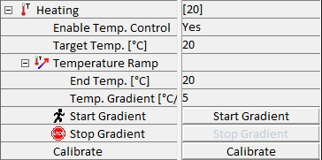

|
加热
|
加热参数组控制通过 alphaControl 控制器驱动的 WITec 加热台。
软件启动时，加热台使用台内的 PT100 元件进行校准。此过程的信息显示在消息窗口中。加热台的状态（启用、禁用、稳定等）以及加热过程中的当前温度也显示在消息窗口中。
如果加热台存在，则测量（如图像扫描）开始和结束时确定的温度将保存在自动创建的描述扫描的文本对象中。
以下参数允许控制加热台：

启用温度控制
使用此参数可以启用（是）或禁用（否）温度控制。如果温度控制被禁用，此组中的所有其他参数将变为非活动状态，目标温度自动设置为 20 °C。
目标温度 [°C]
此处可以输入加热台的目标温度。如果更改了目标温度，加热台将尝试使用比例(P)积分(I)微分(D)调节回路的 P、I 和 D 参数达到新的目标温度。
温度斜坡
使用此组可以线性地将温度斜坡到特定目标温度。以下参数允许进行此控制：
结束温度 [°C]
斜坡结束时加热台应达到的温度。
温度梯度 [°C/min]
温度斜坡的斜率，单位为 °C/分钟。
开始梯度
启动温度斜坡。
停止梯度
停止温度斜坡。
校准
此按钮触发使用加热台内 PT100 元件的加热台自动校准。（此步骤在启动 WITec Control 时自动执行。）
P 增益
PID 调节回路的 P 增益。
I 增益
PID 调节回路的 I 增益。
D 增益
PID 调节回路的 D 增益。
获取温度间隔 [s]
此参数确定测量温度的时间间隔。